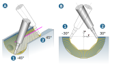

5 Axes
Machine kinematics
Use 5X Machine or 3X Machine to select the machine type used for machining. The 3X Machine option can be used to also create NC programs for 3X machines and postprocessors.
Axial inclination setup / radial inclination setup
Define the maximum permissible angle range for rotating the tool around the first rotary axis (axial inclination) or around the second rotary axis (radial inclination).
Fixed: Select if all the machining is to be carried out using the Fixed angle.
Fixed angle: Define the angle for the axial/radial inclination of the tool.
Interpolation (start to end): Select to interpolate the angle of the tool from the start to the end of machining in a defined area.
Interpolation by radial position: Particularly suitable for ensuring collision safety in thread-like geometries with undercut areas. In combination with a suitable start angle/end angle, the tool inclination is continuously adjusted depending on the radial position.
Start angle / End angle: Define the start angle/end angle for machining in the Interpolation (start to end) mode.
|
Example |
5X Radial Machining, ball mill, infeed strategy = Along axis, (A) Axial inclination, (B) Radial inclination = Interpolation (start to end), (1) Start angle, (2) End angle. |
|  |
Interpolate lines: The orientation of the tool follows the defined synchronization lines (1).

Undercut behavior
Default: The toolpath calculation is checked in undercut surface areas due to the risk of collision and stopped if necessary.
Skip Undercuts: The toolpath in undercut surface areas is now automatically adjusted so that machining is possible. Using this option allows rest material to remain in the model.